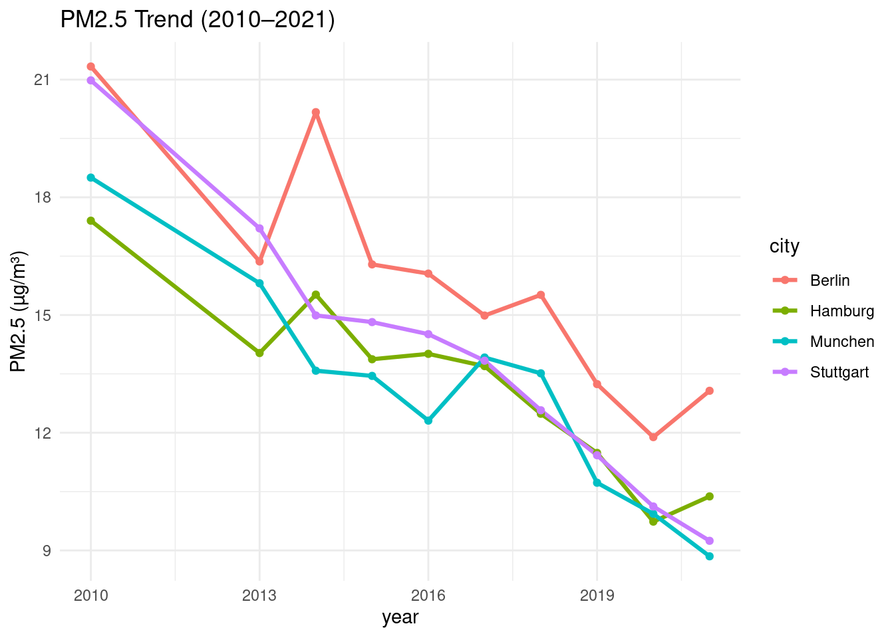
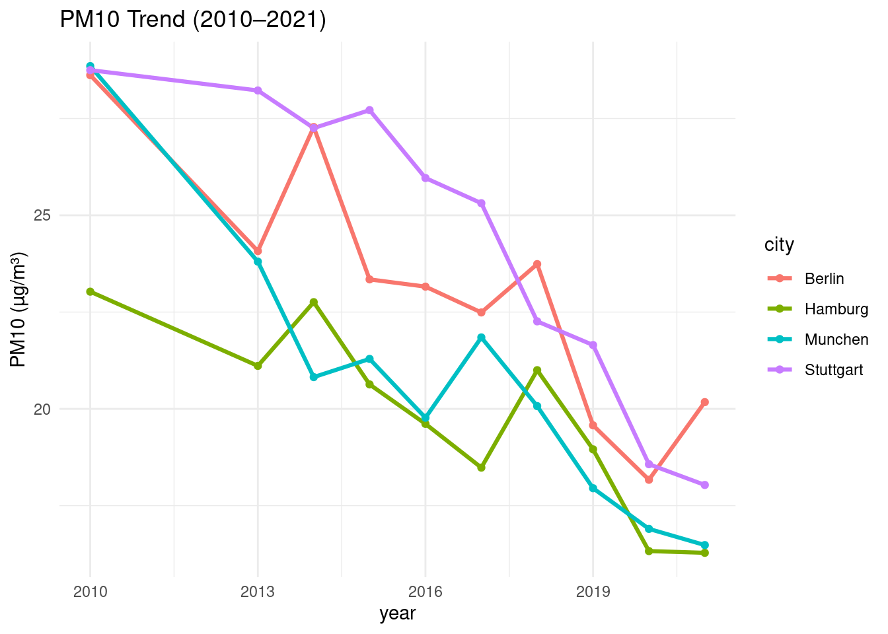

1 + 1[1] 2Quarto enables you to weave together content and executable code into a finished document. To learn more about Quarto see https://quarto.org.
When you click the Render button a document will be generated that includes both content and the output of embedded code. You can embed code like this:
1 + 1[1] 2You can add options to executable code like this
[1] 4The echo: false option disables the printing of code (only output is displayed).
# Load libraries
library(tidyverse)── Attaching core tidyverse packages ──────────────────────── tidyverse 2.0.0 ──
✔ dplyr 1.1.4 ✔ readr 2.1.5
✔ forcats 1.0.0 ✔ stringr 1.5.2
✔ ggplot2 3.5.2 ✔ tibble 3.3.0
✔ lubridate 1.9.4 ✔ tidyr 1.3.1
✔ purrr 1.1.0
── Conflicts ────────────────────────────────────────── tidyverse_conflicts() ──
✖ dplyr::filter() masks stats::filter()
✖ dplyr::lag() masks stats::lag()
ℹ Use the conflicted package (<http://conflicted.r-lib.org/>) to force all conflicts to become errorslibrary(readxl)
library(here)here() starts at /cloud/projectlibrary(dplyr)
library(readr)
library(ggthemes)
library(ggridges)
library(ggplot2)
library(gt)
library(knitr)
library(stringr)
library(lubridate)
library(broom)
library(scales)
Attaching package: 'scales'
The following object is masked from 'package:purrr':
discard
The following object is masked from 'package:readr':
col_factorlibrary(sf) Linking to GEOS 3.8.0, GDAL 3.0.4, PROJ 6.3.1; sf_use_s2() is TRUElibrary(janitor)
Attaching package: 'janitor'
The following objects are masked from 'package:stats':
chisq.test, fisher.testlibrary(stringr)# import raw data
ambient_air <- read_excel(here::here("data/raw/who_ambient_air_quality_database_version_2024_(v6.1).xlsx"), sheet = "Update 2024 (V6.1)")Warning: Expecting numeric in E2769 / R2769C5: got 'NA'Warning: Expecting numeric in E8509 / R8509C5: got 'NA'Warning: Expecting numeric in E27891 / R27891C5: got 'NA'# Process raw data (data transformation)
air_quality <- ambient_air |>
clean_names() |> # cleaning and standardizing name
rename_with(~ gsub("\\s+", "_", .x)) |> # dobulechecking by replacing spaces with "_"
rename(region = who_region,
country = country_name,
pm10 = pm10_concentration,
pm25 = pm25_concentration,
no2 = no2_concentration,
station = type_of_stations) |> # reanmming variable names
mutate(region = recode(region,
`1_Afr` = "AF",
`2_Amr` = "AM",
`3_Sear` = "SEA",
`4_Eur` = "EU",
`5_Emr` = "EM",
`6_Wpr` = "WP",
`7_NonMS` = "NonMS")) |>
mutate(city = str_remove(city, "/[A-Z]{3}$")) |>
mutate(across(c(pm10, pm25, no2, population),
as.numeric), year = as.integer(year), city = factor(city)) |>
filter(!is.na(pm10) &
!is.na(pm25) &
!is.na(no2) & !is.na(year) & !is.na(population)) |>
select(region:year,
pm10:no2, # selcting relevant columns for analysis
station,
population) |>
arrange(region, country, city, year)Warning: There were 4 warnings in `mutate()`.
The first warning was:
ℹ In argument: `across(c(pm10, pm25, no2, population), as.numeric)`.
Caused by warning:
! NAs introduced by coercion
ℹ Run `dplyr::last_dplyr_warnings()` to see the 3 remaining warnings.# export processed data
write_csv(air_quality,
here::here("data/processed/who_ambient_air_quality_database_version_2024_(v6.1)_processed.csv"))# load dataset
air_quality# A tibble: 6,927 × 10
region iso3 country city year pm10 pm25 no2 station population
<chr> <chr> <chr> <fct> <int> <dbl> <dbl> <dbl> <chr> <dbl>
1 AF BEN Benin Cotonou 2020 9.1 7.7 130. NA 691949
2 AF ZAF South Africa Buffalo 2021 29.0 12.6 10.9 NA 708559
3 AF ZAF South Africa Cape T… 2019 19.8 8.07 24.2 NA 4617560
4 AF ZAF South Africa Cape T… 2020 25.2 8.91 8.22 NA 4617560
5 AF ZAF South Africa Cape T… 2021 36.3 14.9 17.2 NA 4617560
6 AF ZAF South Africa Ethekw… 2015 23.7 15.6 3.7 NA 3158313
7 AF ZAF South Africa Ethekw… 2020 39.1 16.8 36.4 NA 3158313
8 AF ZAF South Africa Ethekw… 2021 39.1 16.7 11.6 NA 3158313
9 AF ZAF South Africa Johann… 2012 57.9 27.0 36.5 NA 5782747
10 AF ZAF South Africa Johann… 2013 41.0 23.1 55.1 NA 5782747
# ℹ 6,917 more rows# explore dataset
glimpse(air_quality)Rows: 6,927
Columns: 10
$ region <chr> "AF", "AF", "AF", "AF", "AF", "AF", "AF", "AF", "AF", "AF",…
$ iso3 <chr> "BEN", "ZAF", "ZAF", "ZAF", "ZAF", "ZAF", "ZAF", "ZAF", "ZA…
$ country <chr> "Benin", "South Africa", "South Africa", "South Africa", "S…
$ city <fct> Cotonou, Buffalo, Cape Town, Cape Town, Cape Town, Ethekwin…
$ year <int> 2020, 2021, 2019, 2020, 2021, 2015, 2020, 2021, 2012, 2013,…
$ pm10 <dbl> 9.100, 29.035, 19.816, 25.250, 36.336, 23.737, 39.125, 39.1…
$ pm25 <dbl> 7.700, 12.630, 8.067, 8.915, 14.855, 15.612, 16.834, 16.669…
$ no2 <dbl> 129.635, 10.880, 24.220, 8.220, 17.200, 3.700, 36.350, 11.6…
$ station <chr> "NA", "NA", "NA", "NA", "NA", "NA", "NA", "NA", "NA", "NA",…
$ population <dbl> 691949, 708559, 4617560, 4617560, 4617560, 3158313, 3158313…head(air_quality)# A tibble: 6 × 10
region iso3 country city year pm10 pm25 no2 station population
<chr> <chr> <chr> <fct> <int> <dbl> <dbl> <dbl> <chr> <dbl>
1 AF BEN Benin Cotonou 2020 9.1 7.7 130. NA 691949
2 AF ZAF South Africa Buffalo 2021 29.0 12.6 10.9 NA 708559
3 AF ZAF South Africa Cape To… 2019 19.8 8.07 24.2 NA 4617560
4 AF ZAF South Africa Cape To… 2020 25.2 8.91 8.22 NA 4617560
5 AF ZAF South Africa Cape To… 2021 36.3 14.9 17.2 NA 4617560
6 AF ZAF South Africa Ethekwi… 2015 23.7 15.6 3.7 NA 3158313tail(air_quality)# A tibble: 6 × 10
region iso3 country city year pm10 pm25 no2 station population
<chr> <chr> <chr> <fct> <int> <dbl> <dbl> <dbl> <chr> <dbl>
1 WP KOR Republic of Ko… Ulsan 2017 42.1 24.1 0.022 NA 910330
2 WP KOR Republic of Ko… Ulsan 2018 39.4 22.9 0.02 NA 910330
3 WP KOR Republic of Ko… Ulsan 2019 36.6 20.3 0.02 NA 910330
4 WP SGP Singapore Sing… 2014 30 18.0 24 NA 5935053
5 WP SGP Singapore Sing… 2018 29 15.0 26 NA 5935053
6 WP SGP Singapore Sing… 2021 28 12 25 Urban 5935053str(air_quality)tibble [6,927 × 10] (S3: tbl_df/tbl/data.frame)
$ region : chr [1:6927] "AF" "AF" "AF" "AF" ...
$ iso3 : chr [1:6927] "BEN" "ZAF" "ZAF" "ZAF" ...
$ country : chr [1:6927] "Benin" "South Africa" "South Africa" "South Africa" ...
$ city : Factor w/ 7136 levels "A Coruna","A La Shan Zuo Qi",..: 1394 878 1013 1013 1013 1838 1838 1838 2856 2856 ...
$ year : int [1:6927] 2020 2021 2019 2020 2021 2015 2020 2021 2012 2013 ...
$ pm10 : num [1:6927] 9.1 29 19.8 25.2 36.3 ...
$ pm25 : num [1:6927] 7.7 12.63 8.07 8.91 14.86 ...
$ no2 : num [1:6927] 129.63 10.88 24.22 8.22 17.2 ...
$ station : chr [1:6927] "NA" "NA" "NA" "NA" ...
$ population: num [1:6927] 691949 708559 4617560 4617560 4617560 ...nrow(air_quality)[1] 6927ncol(air_quality)[1] 10# analysis of processed data# Filter only German cities of interest
germany_cities <- c("Berlin", "Hamburg", "Munchen", "Stuttgart")
air_quality_deu <- air_quality |>
filter(country == "Germany",
city %in% germany_cities,
year >= 2010 & year <= 2021)desc_stats <- air_quality_deu |>
group_by(city) |>
summarise(
mean_pm25 = mean(pm25),
sd_pm25 = sd(pm25),
mean_pm10 = mean(pm10),
sd_pm10 = sd(pm10),
mean_no2 = mean(no2),
sd_no2 = sd(no2))
print(desc_stats)# A tibble: 4 × 7
city mean_pm25 sd_pm25 mean_pm10 sd_pm10 mean_no2 sd_no2
<fct> <dbl> <dbl> <dbl> <dbl> <dbl> <dbl>
1 Berlin 15.9 2.99 23.1 3.25 31.6 3.23
2 Hamburg 13.3 2.32 19.8 2.36 29.6 2.94
3 Munchen 13.1 2.83 20.8 3.63 40.6 9.29
4 Stuttgart 14.0 3.45 24.4 3.98 52.3 12.2 ggplot(air_quality_deu,
aes(year,
pm25,
color = city)) +
geom_line(size = 1.1) +
geom_point() +
theme_minimal() +
labs(title = "PM2.5 Trend (2010–2021)", y = "PM2.5 (µg/m³)")Warning: Using `size` aesthetic for lines was deprecated in ggplot2 3.4.0.
ℹ Please use `linewidth` instead.
ggplot(air_quality_deu,
aes(year,
pm10,
color = city)) +
geom_line(size = 1.1) +
geom_point() +
theme_minimal() +
labs(title = "PM10 Trend (2010–2021)", y = "PM10 (µg/m³)")
ggplot(air_quality_deu,
aes(year,
no2,
color = city)) +
geom_line(size = 1.1) +
geom_point() +
theme_minimal() +
labs(title = "NO₂ Trend (2010–2021)", y = "NO₂ (µg/m³)")
Trend Analysis
compute_slope <- function(air_quality_deu, pollutant) {
model <- lm(air_quality_deu[[pollutant]] ~ air_quality_deu$year)
slope <- coef(model)[2] # yearly rate of change
return(slope)
}
slopes <- air_quality_deu |>
group_by(city) |>
summarise(
slope_pm25 = compute_slope(cur_data(), "pm25"),
slope_pm10 = compute_slope(cur_data(), "pm10"),
slope_no2 = compute_slope(cur_data(), "no2")
)Warning: There was 1 warning in `summarise()`.
ℹ In argument: `slope_pm25 = compute_slope(cur_data(), "pm25")`.
ℹ In group 1: `city = Berlin`.
Caused by warning:
! `cur_data()` was deprecated in dplyr 1.1.0.
ℹ Please use `pick()` instead.print(slopes)# A tibble: 4 × 4
city slope_pm25 slope_pm10 slope_no2
<fct> <dbl> <dbl> <dbl>
1 Berlin -0.795 -0.853 -0.143
2 Hamburg -0.646 -0.606 -0.809
3 Munchen -0.779 -0.999 -2.67
4 Stuttgart -1.00 -1.09 -3.35 percent_change <- air_quality_deu |>
group_by(city) |>
summarise(
pct_pm25 = ((last(pm25) - first(pm25)) / first(pm25)) * 100,
pct_pm10 = ((last(pm10) - first(pm10)) / first(pm10)) * 100,
pct_no2 = ((last(no2) - first(no2)) / first(no2) * 100)
)
print(percent_change)# A tibble: 4 × 4
city pct_pm25 pct_pm10 pct_no2
<fct> <dbl> <dbl> <dbl>
1 Berlin -38.7 -29.5 -16.5
2 Hamburg -40.4 -29.3 -28.1
3 Munchen -52.2 -42.9 -55.5
4 Stuttgart -55.9 -37.3 -51.8# Compute correlation matrix
corr_data <- air_quality_deu |>
select(pm25, pm10, no2)
corr_matrix <- cor(corr_data, use = "complete.obs")
print(corr_matrix) pm25 pm10 no2
pm25 1.0000000 0.8656775 0.3967036
pm10 0.8656775 1.0000000 0.7072060
no2 0.3967036 0.7072060 1.0000000# Convert matrix to tidy format for ggplot
corr_air_quality_deu <- corr_matrix |>
as.data.frame() |>
rownames_to_column("var1") |>
pivot_longer(cols = -var1, names_to = "var2", values_to = "value")
# Plot heatmap
ggplot(corr_air_quality_deu,
aes(var1, var2, fill = value)) +
geom_tile() +
geom_text(aes(label = round(value, 2)), size = 5) +
scale_fill_gradient2(low = "blue", high = "red", mid = "white", midpoint = 0) +
theme_minimal() +
labs(title = "Correlation Heatmap", x = "", y = "")
pca_input <- air_quality_deu |>
select(pm25, pm10, no2) |>
scale()
pca <- prcomp(pca_input)
summary(pca)Importance of components:
PC1 PC2 PC3
Standard deviation 1.527 0.7835 0.23471
Proportion of Variance 0.777 0.2046 0.01836
Cumulative Proportion 0.777 0.9816 1.00000plot(pca, main = "PCA Scree Plot")
biplot(pca, cex = 0.6, main = "PCA Biplot")
# Plot PCA without labels
plot(pca$x[,1], pca$x[,2],
xlab = "PC1", ylab = "PC2",
main = "PCA Biplot (clean)",
pch = 19, col = "grey40")
# Add variable arrows
arrows(0, 0, pca$rotation[,1] * 3, pca$rotation[,2] * 3,
col = "red", lwd = 2)
# Add variable names with spacing
text(pca$rotation[,1] * 3.2,
pca$rotation[,2] * 3.2,
labels = rownames(pca$rotation),
col = "red", cex = 1)
set.seed(123)
k3 <- kmeans(pca_input, centers = 3)
air_quality_deu$cluster <- k3$cluster
ggplot(air_quality_deu,
aes(pm25,
pm10,
color = as.factor(cluster))) +
geom_point(size = 3) +
theme_minimal() +
labs(title = "K-means Clustering (3 clusters)", color = "Cluster")